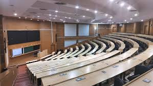

Day 1: First Day at IITB
My first day at IITB was filled with excitement, anxiety, and curiosity. meeting new friends, As I entered the gates of my new college, the imposing buildings, bustling crowd of students, and the sprawling campus instantly made me feel like I had stepped into a whole new world. ...

First Semester: Adjusting to College Life
The first semester was both challenging and rewarding. The professors, the fast-paced classes, and meeting new people all made it overwhelming at first. However, I quickly adapted to hostel life, formed friendships, and began to manage my time effectively. It was my first taste of IITB's rigorous academic culture.
IITB Clubs and Tech teams
During the first year, I was introduced to the vibrant extracurricular life at IITB. I explored different clubs and societies, and attended various events. Though I didn’t join a club immediately, it was exciting to see all the opportunities that lay ahead. I made a few good friends along the way, and we shared many fun moments.
First Major Exam: The IITB Exam System
As the first semester progressed, we faced our first major exams. The pressure was high, but I learned to stay calm and manage stress. It was a learning curve not just academically, but also in how to handle exam pressure. The exams taught me a lot about time management and focusing on what truly matters.
End of First Year: Reflection and Growth
At the end of my first year, I look back at how much I have grown. From a nervous fresher to someone who now feels more at home at IITB, the first year was full of experiences, both academic and personal. I realized how much I’ve learned, not just in classes, but from the people and the environment around me. The friendships I’ve made and the experiences I’ve had will stay with me forever.
